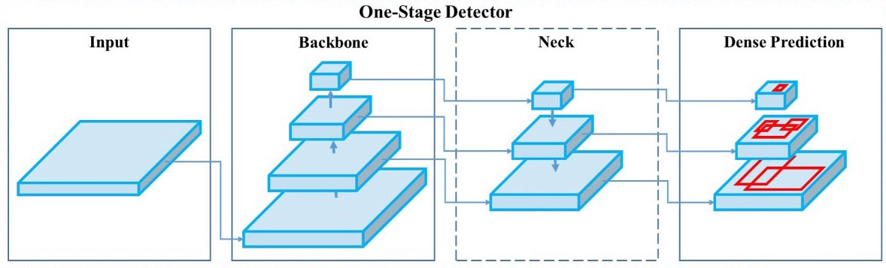

PROBLEM STATEMENT
Problem Statement
Problem 1: City streets are not always accessible.
According to the 2010 US Census, there are 30.6 million Americans with physical disabilities. Nearly half use an assistive aid, such as a wheelchair (3.6 million) or a cane, crutches, or walker (11.6 million). Many streets, sidewalks, and businesses in the US remain inaccessible.
Parking and sidewalk accessibility fundamentally affects where and how people live their lives, yet it is challenging for anyone to determine whether a given destination is accessible.
The National Council of Disability and other organizations do not have comprehensive information on the degree to which sidewalks are accessible. Where partial information relevant to accessibility exists, there are few user-friendly solutions to deliver it to those who need it most.
Methods available to organizations to assess accessibility, often in-person street audits or citizen call-in reports, are inconsistent and costly.
Problem 2: Accessible parking is not easy to find.
According to the Accessible Parking Coalition, 69% of people with disabilities have problems finding accessible parking in their communities. 96% say parking availability is important to leading an independent life. 70% say their decision to drive or ride is influenced by parking availablity. 62% say they would be more likely to drive or ride if parking was more available. 52% have decided not to make a trip because of concerns about finding parking.Mission and Vision Statement
Sympathizing with the accessibility problem, we came up with a vision statement that finding accessible parking should not be a challenge. Our mission statement to chart accessibility obstacles and accessible parking opportunities with computer vision, Google Street View and Denver OpenData directly supports our team's vision.
For our pilot, we decided to map Denver, Colorado, for the following reasons:
1) Denver is home to one of our team member
2) driving and parking is ubiquitous
3) the grid system facilitated our data collection
4) ample supplementary public data was available
We hope to inspire other data scientists to implement AccessiPark in their cities!
GATHERING DATA
We used ArcGIS Pro to collect the latitude and longitude locations in an area of Downtown Denver, and we used Google's Static Streetview API to download images facing the street side. In total we trained, tested and validated our model on ~6000 images that the team labelled using LabelImg. For inference, we expanded the area to greater Denver, collecting over 200,000 images (10 GB).
MODEL
We experimented with two models:(1) EfficientDet (2) yolo v5, using pre-trained weights and performing transfer learning with our labelled dataset. These two models represent the state of the art for efficient object detection. We trained the models with TensorFlow on Google Colab, and found the best performance with YOLO v5.
We split our labelled data into train, test and validation sets and evaluated model performance with the metric mean Average Precision (mAP). Our model using the Yolo v5 architecture was better able to identify street-side signs and objects than our efficientDet-based model (mAP@0.5 = .63 for yolo v5 vs mAP@0.5=0.45 for efficientDet). Our final version detected 5 classes - accessible parking signs, no parking signs, stop signs, lamps/poles and fire hydrants.
Fig. schematic of object detector architecture
INFERENCE
We used our trained YOLO model to detect objects on 200,000 images in the Denver area. Where our model found objects, we wrote those out to files that are then used to power the map visualization.
VISUALIZATION
The below diagram shows the product architecture. Google Colab was used to conduct model training/testing/validation and model inference. We implemented additional transformations on the model output and public data through batch processing on our local systems. We leveraged AWS S3 to store labelled images, models, and inference results. Our AWS EC2 hosts our prototype and runs two Docker containers - the first hosts a Flask API and serves oru data, and the second builds and hosts our React front-end with Node and Nginx.